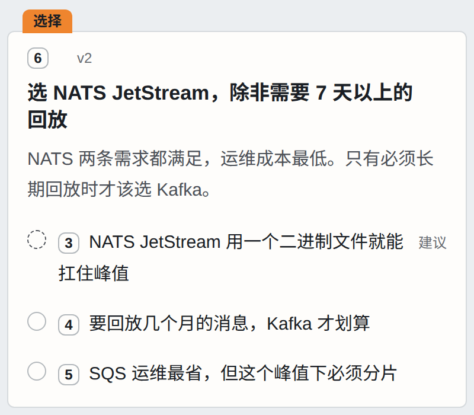
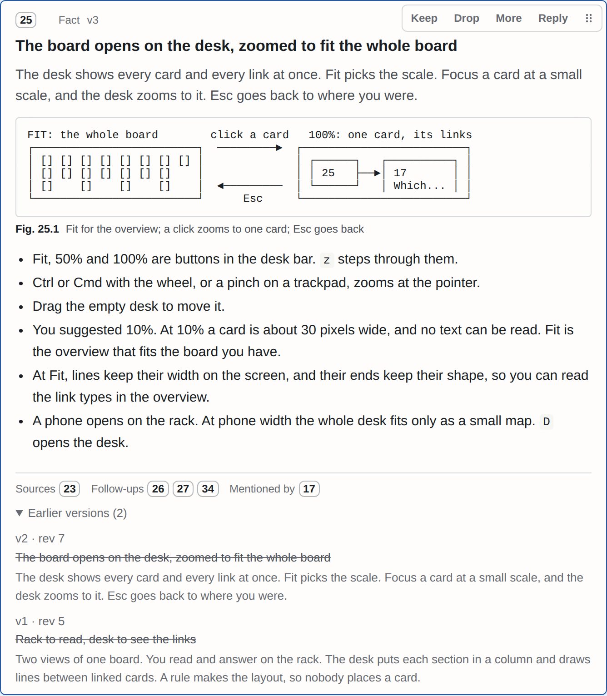
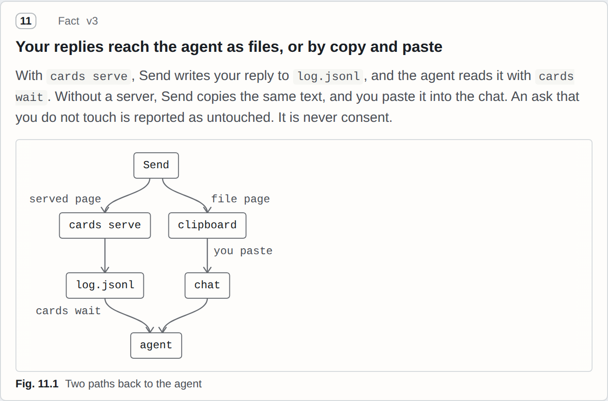

Agent 写下的
示例里的卡片 6，在 board.org 里就是这几行。纯 Org mode：标题是结论，抽屉里写这张卡片要你做什么，复选框是选项。
{{CARD_SRC_ZH}}给 Claude Code 这类编程 Agent 用的技能。Agent 把回答摆成一个看板，一张卡片只说一个结论，最多带一个提问。回复是结构化数据，一张卡片一行，传回给 Agent。
示例里的卡片 6，在 board.org 里就是这几行。纯 Org mode：标题是结论，抽屉里写这张卡片要你做什么，复选框是选项。
{{CARD_SRC_ZH}}同一张卡片在页面上。标签说明它在等你。Agent 建议的选项有标记，你选了才算数。

Agent 改的是卡片，不是把回答重写一遍。卡片编号不变，版本加一，之前的版本划掉留在下面。你对旧版本的回答会被标出来，不会直接沿用。
本项目设计评审看板里的卡片 13，已经改到 v5。看板是英文的。

Agent 只写谁指向谁，方框和箭头由页面来画。截图和文件里的二十行也这样放进卡片，全在同一个 HTML 文件里。
同一个看板的卡片 11：回复传回 Agent 的两条路。

两个是示例，中英文各一个；两个是这个项目自己在用的看板。在哪个看板上点“发送”，都只显示回复，不会发出去。
# 1. 复制技能。要真的复制一份，不要做软链接。
git clone https://github.com/{{REPO}}
cp -R {{NAME}}/skill ~/.claude/skills/{{NAME}}
# 2. 不用 Agent，也能先看一个看板。
cd {{NAME}}
node skill/bin/cards.mjs render design-review
node skill/bin/cards.mjs serve然后让 Agent 做一件要你拿主意的事。
比较三个消息队列，给接入服务用，让我来选。用卡片回答。
技能里写了什么时候值得用看板，什么时候直接说更好。多数回答还是该用文字。
需要 Node 18 及以上，没有其他依赖。复制的那一份不会自己更新，拉取新版本后再复制一次。node ~/.claude/skills/{{NAME}}/bin/cards.mjs --version 能看到当前版本。